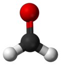

What is Formaldehyde? Formaldehyde (systematic name methanal), is a naturally occurring organic compound with the formula CH2O (H-CHO). It is the simplest of the aldehydes (R-CHO). The common name of this substance comes from its similarity and relation to formic acid. Formaldehyde is an important precursor to many other materials and chemical compounds. In 1996, the installed capacity for the production of formaldehyde was estimated to be 8.7 million tons per year. It is mainly used in the production of industrial resins, e.g., for particle board and coatings. In view of its widespread use, toxicity, and volatility, formaldehyde poses a significant danger to human health. In 2011, the US National Toxicology Program described formaldehyde as "known to be a human carcinogen".  Formaldehyde is more complicated than many simple carbon compounds in that it adopts several different forms. As a gas, formaldehyde is colorless and has a characteristic pungent, irritating odor. Upon condensation, the gas converts to various other forms of formaldehyde (with different chemical formulas) that are of more practical value. One important derivative is the cyclic trimer metaformaldehyde or 1,3,5-trioxane with the formula (CH2O)3. There is also a linear polymer called paraformaldehyde. These compounds have similar chemical properties and are often used interchangeably. When dissolved in water, formaldehyde also forms a hydrate, methanediol, with the formula H2C(OH)2. This compound also exists in equilibrium with various oligomers (short polymers), depending on the concentration and temperature. A saturated water solution, of about 40% formaldehyde by volume or 37% by mass, is called "100% formalin". A small amount of stabilizer, such as methanol, is usually added to suppress oxidation and polymerization. A typical commercial grade formalin may contain 10–12% methanol in addition to various metallic impurities. The name was long ago genericized from an old trade name "Formalin". Even if Formaldehyde shown chemical properties like aldehyde in general, this compound is more reaactive than the other aldehyde. Formaldehyde is an elektrofil, can be used in substitution aromatic elektrofil reaction and aromatic compound and can do an elektrofil adition reaction and alkene. In base catalytic state, Formaldehyde can do Cannizzaro reaction, formed formic acid and methanol Formaldehyde can form trimer siclic, 1,3,5-trioksana atau polimer linier poliosimethylen. This compound formation make formaldehyde gas properties different from ideal gas properties, esspecially in high pressure or low temperature. Formaldehyde can be oxydise by atmosfer's oxygen become formic acid, thats why the solution of Formaldehyde have to covered and isolated so the air won't get in.